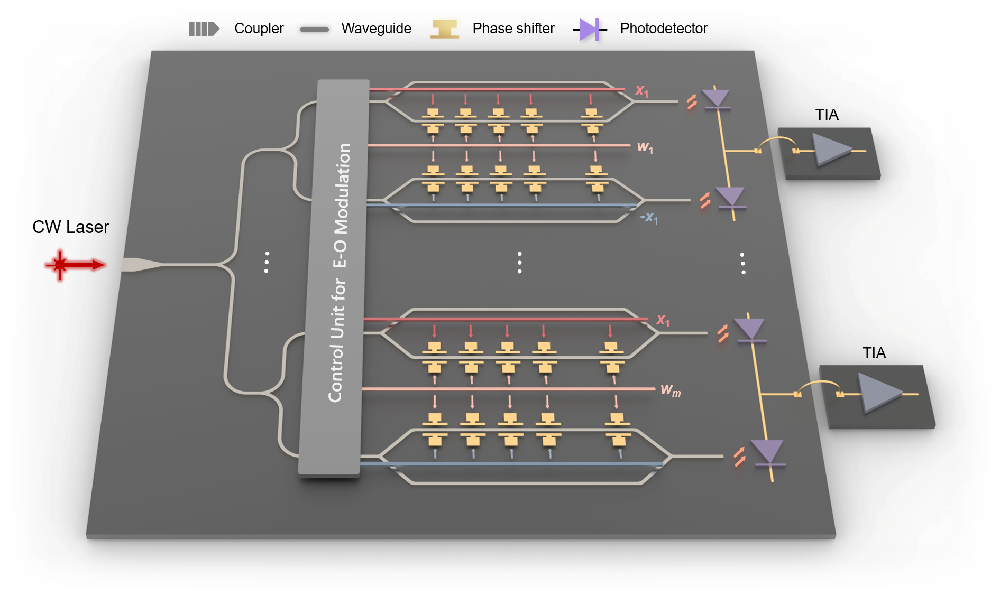
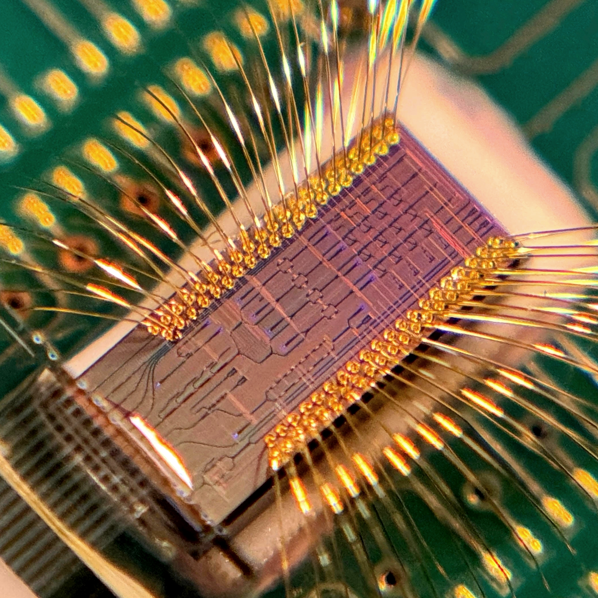
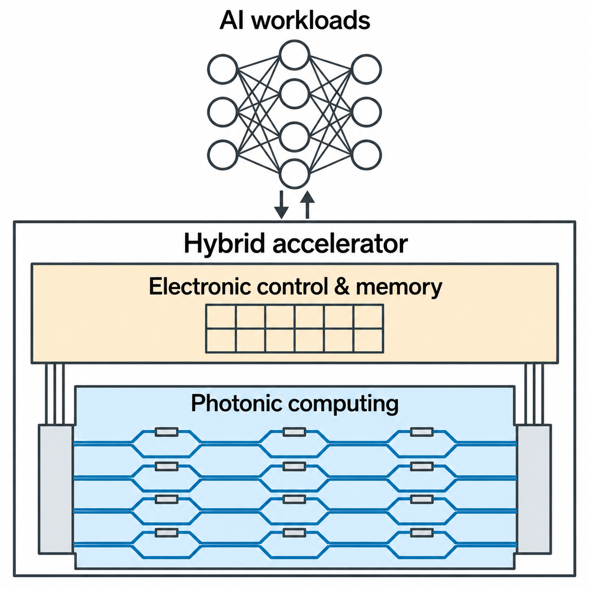

General-Purpose Photonic Computing Primitive for Contemporary Artificial Intelligence
arXiv · 2026
A general-purpose photonic primitive for signed, dynamic AI workloads.
Preprint ↗Photonics · Computing · Microsystems
I am a Postdoctoral Scholar in Medical Engineering and Electrical Engineering at the California Institute of Technology. My research focuses on integrated photonic systems for energy-efficient computing and bioanalysis.
I work at the intersection of photonics, electronics, and biomedical engineering, with an emphasis on co-design across devices, architectures, and algorithms. My work spans photonic AI accelerators, optical biosensors, and multiphysics microsystems, from device concepts to fabricated chips and experimental demonstrations.
I received my Ph.D. in Electrical and Computer Engineering from The University of Texas at Austin in 2026, advised by Prof. Ray T. Chen and co-advised by Prof. David Z. Pan, and my B.S. in Microelectronics Science and Engineering from Nankai University in 2020. I also gained industry research experience at Applied Materials and Intel Labs.
At Caltech, I am extending this work into photoacoustics and multiphysics approaches to sensing and actuation. Explore my research →

arXiv · 2026
A general-purpose photonic primitive for signed, dynamic AI workloads.
Preprint ↗
Optica · 2025
Embedding structured model compression directly into photonic hardware.
Paper ↗
Journal of Lightwave Technology · 2024
A review of photonic computing devices, accelerator architectures, and hardware–software co-design.
Paper ↗
Applied Physics Reviews · 2023
Multiplexed antigen detection with a subwavelength-grating microring platform.
Paper ↗
Lab on a Chip · 2021
Reusing an acoustic field to increase cell-separation throughput in a compact chip.
Paper ↗